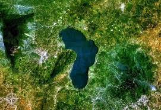
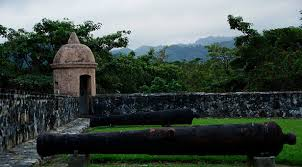

Conocida por su vibrante vida nocturna y el Parque Nacional Pico Bonito. Es la tercera ciudad más grande de Honduras, en su litoral se extiende playas hermosas que dan al Mar Caribe. La Ceiba ha sido conocida durante mucho tiempo como la capital turística de Honduras, debido a su proximidad a la playa
Trujillo
Trujillo es una de las primeras ciudades fundadas por los españoles durante la conquista, pues gracias a la profundidad de la bahía, esta era perfecta para la navegación de los grandes barcos mercantes españoles. Trujillo es una ciudad ubicada en la costa norte de Honduras, y cuenta con una rica historia y atractivos turísticos, especialmente sus hermosas playas.
Puerto Cortés
Puerto Cortez ocupa el puesto 36 en el puerto más grande del mundo. Tiene seis muelles, muelles de 1.157 metros, áreas de almacenamiento abiertas y cerradas e instalaciones costeras para el almacenamiento de rastrillos, camiones, contenedores y patios de productos básicos. También cuenta con patios de alquiler y áreas de almacén. Estas instalaciones son completamente modernas y utilizan la tecnología más avanzada
Islas de la Bahía
Las tres islas de la Bahía (Roatán, Utila y Guanaja) se encuentran en el extremo sur de la barrera coralina mesoamericana, el segundo mayor arrecife de coral del mundo, en cuyas aguas azul turquesa se encuentran riquezas inimaginables. Sin embargo, los precios siguen siendo notablemente bajos, lo que convierte las islas de la Bahía en un lugar estupendo para iniciarse en el buceo..
Amapala
Es un potencial turístico de la zona sur del país y un lugar sensacional, donde los viajeros en este territorio colmado por un clima cálido encuentran playas, exquisita gastronomía marina, aguas termales y muelles que nos permiten apreciar espléndidos atardeceres, pueden disfrutar de momentos únicos.
Cayos Cochinos
Cayos Cochinos es uno de los lugares turísticos más hermosos de Honduras, el país cuenta con importantes recursos biológicos marinos, verás tortugas en la costa mientras te sumerges en sus aguas para apreciar los arrecifes de coral vírgenes de Honduras. Asimismo, se considera un monumento marino natural del país porque puede albergar más de 69 especies de aves
Tela
No te lo puedes perder. Tela te ofrece playas de arena blanca, variedad de hoteles, restaurantes, comunidades garífunas, sitios escondidos adonde se puede apreciar la naturaleza, mientras descansas en una playa virgen y tranquila.
Lago de Yojoa

Otros complejos turísticos en Honduras con un agradable entorno natural equivalen a un lago de 16 kilómetros de largo y 6 kilómetros de ancho, rodeado de enormes montañas, como el Parque Nacional Azul Meambar y el de Santa Bárbara.
Copan
Un sitio arqueológico maya con impresionantes ruinas y esculturas. Las impresionantes ruinas Mayas de Copán, abandonadas en el siglo X, merecen todo el tiempo de visita que les puedas dedicar. Un día completo como mínimo. Es recomendable contratar un guía para aprender mucho más sobre este Patrimonio de la Humanidad, su historia y su gente.
Fortaleza San Fernando de Omoa

La estructura de defensa colonial más importante de toda Centroamérica. Para proteger el norte de Honduras de piratas y ataques de piratas, la estructura megalítica se completó en 1775. Se pueden visitar sus numerosos muros y un museo adyacente que cuenta los hechos más importantes de su historia.
Jardin Botanico Lancetilla
Conocido como el Centro de Investigación situado en la costa del Mar Caribe, al sureste de Tela. Este jardín está lleno de plantas tropicales, de frutos por variedad, así mismo de la fauna silvestre. Es el más grande de todo el mundo; su visita incluye un guía, entradas y transporte de ida y vuelta.
Cuevas de Taulabe
Cabe mencionar que esta cueva no se sabe con exactitud la profundidad que tiene, pero hasta el momento se puede apreciar las distintas figuras esculpidas por el agua en la piedra caliza como el Ala de Ángel o El Buda.
Cuevas de Talgua
Se encuentra en la Sierra de Agalta, donde se han descubierto cientos de huesos humanos y restos de vasijas, escondido en las formaciones rocosas de la cueva, y su historia se remonta al año 1000 a.C.
Catarata Pulhapanzak
Ubicado en el río Lindo, lado norte del lago Yojoa, a unos 43 metros de altura. Hay restos arqueológicos del período clásico tardío. A su alrededor, verá caminos empedrados y restos de fragmentos de cerámica, que pudieron haber existido antes de los mayas.
Biosfera Rio Platano
La enorme reserva natural fue declarada Patrimonio de la Humanidad por la UNESCO, incluidas las montañas que descienden hasta la costa del Mar Caribe, protegiendo uno de los últimos restos de la selva tropical centroamericana
La Moskitia
Se encuentra en el departamento de Gracias a Dios, uno de los nueve pueblos indígenas donde los Miskitos nacieron. Este territorio sostiene los Ríos Coco o Segovia y otros más, debido a la vasta diversidad que posee Moskitia fue considerado como la Amazonía latinoamericana.
Isla de los Pajaros
Esta hermosa Isla es un tesoro que esconde el Golfo de Fonseca y se encuentra exactamente en San Lorenzo, Departamento de Valle. La pequeña Isla de los Pájaros es considerada como uno de los lugares naturales más impresionantes de Honduras, donde podrás apreciar miles de aves, de distintos tamaños y colores.
Cueva del Gigante
La Cueva del Gigante, es una inmensa cavidad rocosa que no recibe ni el viento ni la lluvia directamente, lo que le da un microclima estable ideal para la preservación.
Esta ubicada en la aldea La Estanzuela, Municipio de Marcala, departamento de La Paz, a tan solo 500 metros de la famosa Cascada La Estanzuela.
Parque Nacional La Tigra
Sus atractivos y actividades incluyen: Observación de flora y fauna silvestre: El parque alberga una diversidad sorprendente de especies, como más de 200 tipos de aves, 40 mamíferos y 770 plantas. Los visitantes pueden disfrutar de avistamientos de aves, explorar la vida silvestre y apreciar la abundante vegetación.